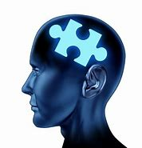

What is mental health?
Mental health includes our emotional, psychological, and social well-being. It affects how we think, feel, and act. It also helps determine how we handle stress, relate to others, and make healthy choices. Mental health is important at every stage of life, from childhood and adolescence through adulthood.
Why is mental health important for overall health?
Mental and physical health are equally important components of overall health. For example, depression increases the risk for many types of physical health problems, particularly long-lasting conditions like diabetes, heart disease, and stroke. Similarly, the presence of chronic conditions can increase the risk for mental illness.
Can your mental health change over time?
Yes, it’s important to remember that a person’s mental health can change over time, depending on many factors. When the demands placed on a person exceed their resources and coping abilities, their mental health could be impacted. For example, if someone is working long hours, caring for a relative, or experiencing economic hardship, they may experience poor mental health.
How common are mental illnesses?
Mental illnesses are among the most common health conditions in the United States. More than 1 in 5 US adults live with a mental illness.
- Over 1 in 5 youth (ages 13-18) either currently or at some point during their life, have had a seriously debilitating mental illness.
- About 1 in 25 U.S. adults lives with a serious mental illness, such as schizophrenia, bipolar disorder, or major depression.
Types of mental health disorders
Specific mental disorders are grouped together due to features they have in common. Some types of mental illness are as follows:
- anxiety disorder
- mood disorder
- schizophrenia disorders
Some more knowledge about mental health
Mental health conditions are increasing worldwide. Mainly because of demographic changes, there has been a 13% rise in mental health conditions and substance use disorders in the last decade (to 2017). Mental health conditions now cause 1 in 5 years lived with disability. Around 20% of the world’s children and adolescents have a mental health condition, with suicide the second leading cause of death among 15-29-year-olds. Approximately one in five people in post-conflict settings have a mental health condition.
Mental health conditions can have a substantial effect on all areas of life, such as school or work performance, relationships with family and friends and ability to participate in the community. Two of the most common mental health conditions, depression and anxiety, cost the global economy US$ 1 trillion each year.
Despite these figures, the global median of government health expenditure that goes to mental health is less than 2%.
